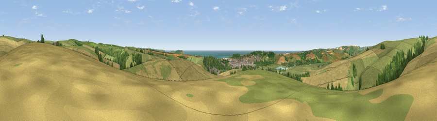

Viewpoint near South Heighton
#4511 in England · top 16% of its area beats it · near South HeightonThe view, rendered

A 360° render of this exact spot computed from the terrain model, tree cover and land cover — summer colours, afternoon light, calibrated against photographs of famous viewpoints. Real trees, hedges and buildings will differ in detail.
The panorama
Grey silhouette: terrain skyline in each direction (720 bearings, Earth curvature and refraction included). Dashed green: skyline with trees (+15 m) and buildings (+8 m) as obstacles. Blue strip: how far the ground is visible on each bearing.
Where the view opens
Wedge length = distance to the farthest visible ground on that bearing (vegetation-aware). Rings at 10, 25 and 50 km.
What fills the view
44% grassland · 35% cropland · 11% woodland · 6% water · 3% built-up
Angular shares of the visible panorama (visual magnitude), not map area. Landscape diversity 0.55 (0–1 Shannon).
Key numbers
More beautiful places nearby
The staircase of upgrades: each row has a higher view potential than everything closer. Driving times are estimates from straight-line distance, calibrated against real road routing — check an actual route before setting out.
| Place | Direction | Drive | Score |
|---|---|---|---|
| Viewpoint near Southease | NW · 2 km | ~5 min | 80.8 |
| Viewpoint near Firle | NNW · 2 km | ~5 min | 81.4 |
| Viewpoint near Firle | N · 2 km | ~5 min | 83.8 |
| Viewpoint near Firle | NE · 3 km | ~7 min | 85.4 |
| Firle Beacon | ENE · 3 km | ~8 min | 88.9 |
| Viewpoint near Niton | WSW · 100 km | ~124 min | 89.2 |
| Viewpoint near West Bexington | W · 191 km | ~210 min | 89.5 |
| The Knoll | W · 192 km | ~211 min | 91.0 |
50.81970, 0.06670 · source: screening · position refined by local search. Computed location — check access rights before visiting.